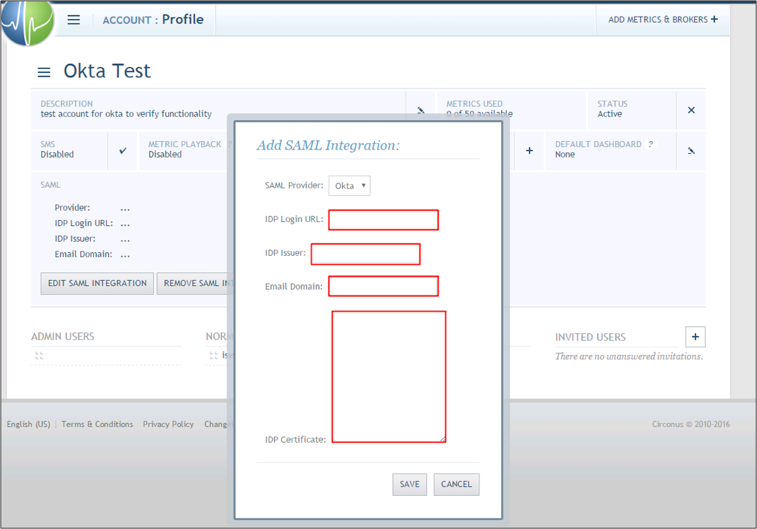
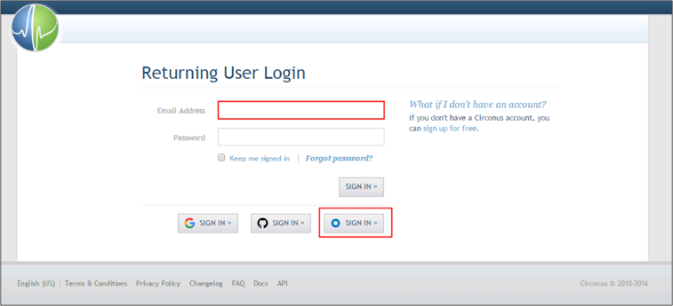

Log in to your Circonus account as an Administrator.
Navigate to Account > Profile.
Click EDIT SAML INTEGRATION.
Enter the following (see screen shot at end of step for reference):
IDP Login URL: Copy and paste the following:
Sign into the Okta Admin Dashboard to generate this variable.
IDP Issuer: Copy and paste the following:
Sign into the Okta Admin Dashboard to generate this variable.
Email Domain: Enter your domain.
IDP Certificate: Copy and paste the following (in PEM text format):
Sign into the Okta Admin Dashboard to generate this variable.
Click SAVE.

Done!
Notes:
SP-initiated flows, IDP-initiated flows, and Just In Time (JIT) provisioning are all supported.
Go to: https://login.circonus.com.
Enter your Email address (leave the Password field empty).
Click the Okta SIGN IN button.
